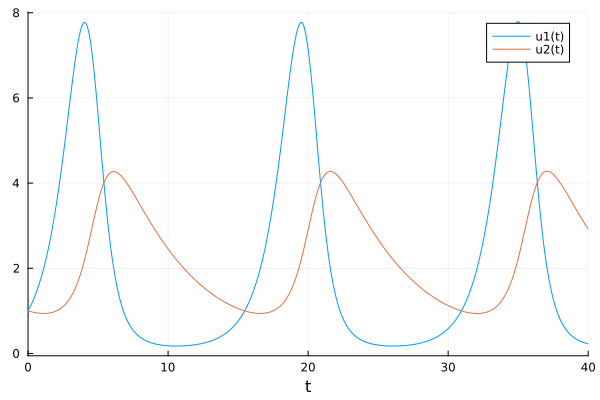
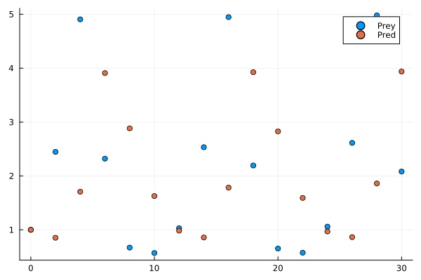
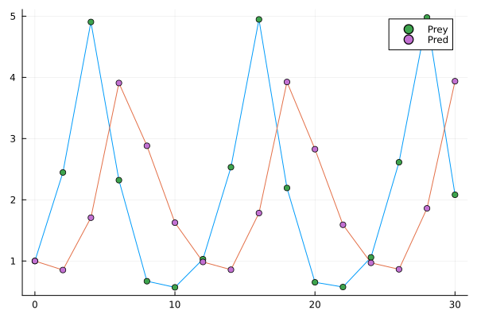
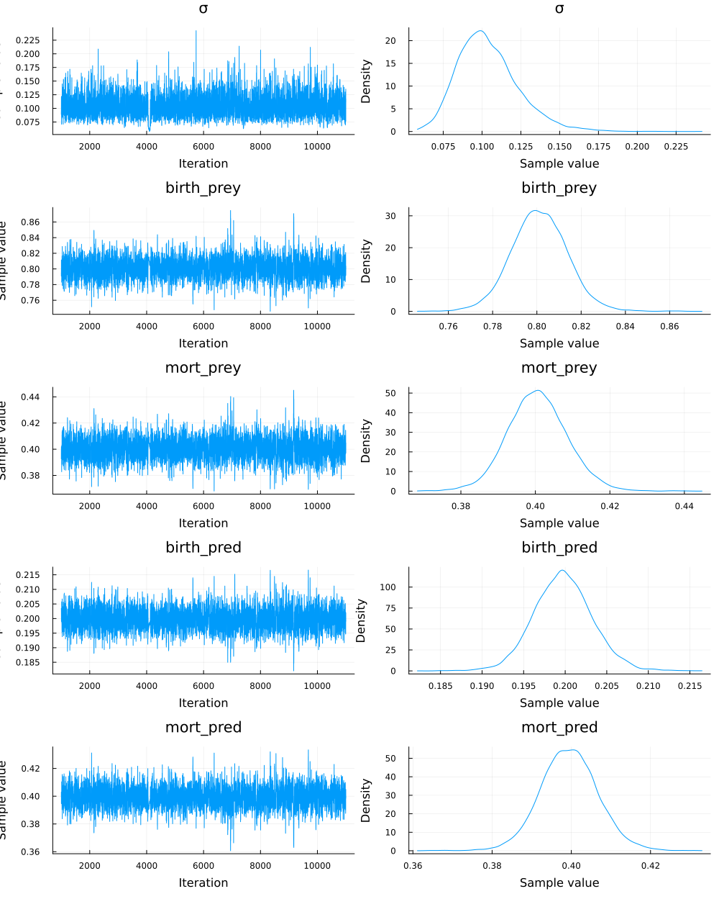
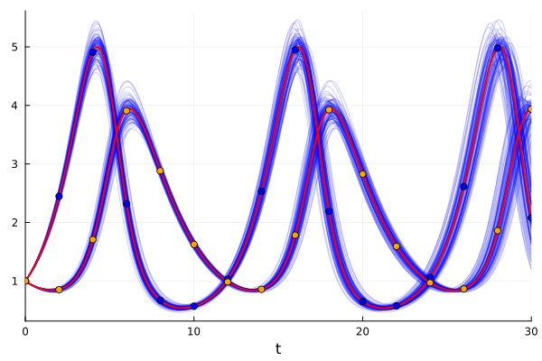
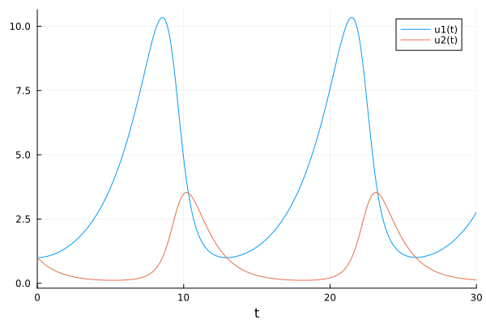
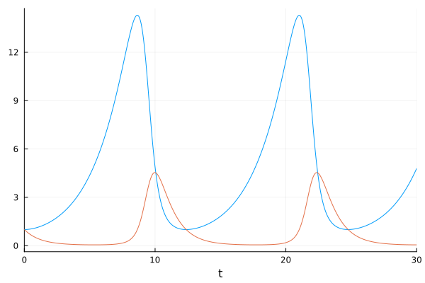
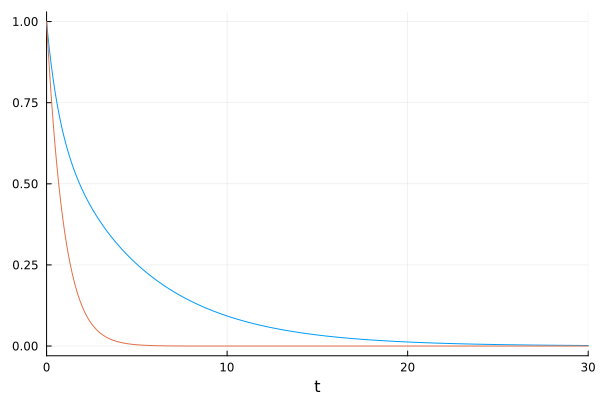

Chapter 11 Ultima online
11.1 The Ultima Online Catastrophe
Ultima online is a fantasy massively multiplayer online role-playing game (MMORPG) created by Richard Garriott between 1995 and 1997, when it was realesed.
The game consisted of a medieval fantasy world in which each player could build their own character. What was interesting and disruptive was that all players interacted with each other, and what one did had repercussions on the general map. So, the game was “alive” in the sense that if two people were fighting in one area and another one came in, the latter could see that fight. Also, the warriors had to hunt and look for resources to get points and improve their skills and again, if a treasure was discovered, or an animal was hunted, it would no longer be available for the rest.
During the development process of the game, Garriott and his team realized that, due to the massiveness of the game, there was going to be a moment when they would not be able to create content at the same speed as the players were consuming it. So they decided to automate the process.
After a lot of work, one of the ideas they came up with was to generate a “Virtual Ecosystem”. This was a really incredible idea in which a whole ecosystem in harmony was simulated inside the game. For example, if an area started to grow grass, the herbivorous animals would come and start eating it. If many animals arrived, they would surely end up eating all the food and would have to go look for other places, it could even happen that some of them were not lucky and died on the way, starving. In the same way, the carnivorous animals (that is, the predators of the herbivores) would strive to hunt as many animals as they could, but if in doing so they killed a significant number of them, food would become scarce causing them to die as well. In this way, as in “real” nature, a beautiful balance was generated.
But how this was even possible?
11.1.1 The Lotka-Volterra model for population dynamics
To begin to understand how this complex ecosystem was created, it makes sense to go to the roots and study a dynamical system in which the interaction between a prey and a predatory population is modeled.
The idea is the same as we mentioned above. In this case, we will have a “prey” population that will have a reproduction rate such that:
\(PreyPopulation_{t+1} \sim PreyPopulation_{t} * BirthRate\)
And a mortality rate that will be also affected by the prey population
\(Prey Population_{t+1} \sim PreyPopulation_{t}* MortalityRate\)
So, representing prey population as \(prey\), birthrate as \(b_{prey}\) and mortality rate as \(m_{prey}\) for simplicity, we can write this as:
\(\frac{dprey}{dt} = prey*(b_{prey} - m_{prey})\)
The population at time \(t\) multiplies at both rates because if the population is zero there can be no births or deaths. This leads us to the simplest ecological model, in which per capita growth is the difference between the birth rate and the mortality rate.
11.1.1.1 Parentheses on differential equations
Before anyone freaks out, lets talk a little bit about that strange notation.
As we said above, the prey´s population will grow proportionally to the birth rate and the actual population. And we also said that the population will shrink proportional to the mortality rate and its actual population. Do you realize that we are describing change?
This is exactly what the equation is saying. You can read that horrendous \(d\) as change! So, the entire term \(\frac{dPrey}{dt}=\) is just saying “the change of the pupulation over time (that´s why the \(dt\) term is deviding there) is equal to…” and that’s it!
These equations, in contrast to the usual equations we are used to, have a function as the unkown value we have to solve for. Having a differential equation of the form
\(\frac{du}{dt} = f(u, t)\)
reads: “give me the function \(u(t)\) whos derivative for each \(u\) and \(t\) is \(f(u, t)\). There is no silver bullet for solving these type of equations. In some cases, you can solve them analytically using different methods depending on the particular equation, which gives you an expression for the solution function. But more often, numerical methods are used to obtain an approximation of the function in some range, with the help of computers. We will focus on introducing how to solve systems of ordinary differential equations, the simplest type of differential equations, using the awesome tools from the SciML Julia ecosystem.
Differential equations can be a difficult concept to understand because we are very used to work with absolute values. But sometimes (in fact, very often) it is much more easier to describe change over absolute values. And this is one of this cases. But, for now, lets leave this up to here, we will take it up again in the next chapter.
11.1.1.2 Returning to Lotka-Volterra
The model we are looking for has to explain the interaction between the two species. To do so, we must include the pradator population in order to modify the mortality rate of the prey, leaving us with:
\(\frac{dprey}{dt} = prey*(b_{prey} - m_{prey}*pred)\)
In a similar way we can think the interaction on the side of the predator, where the mortality rate would be constant and the birth rate will depend upon the prey population:
\(\frac{dpred}{dt} = pred*(b_{pred}*prey - m_{pred})\)
In this way we obtain the Lotka-Volterra model in which the population dynamics is determined by a system of coupled ordinal differential equations (from now on, ODEs). This is a simplified but powerful model which tells us how a hunter-prey system will oscillate without finding stable values for their populations.
11.1.1.3 SciML to simulate population dynamics
We will use the DifferentialEquations.jl package to define and solve our ODE problem. First, we should define a function that encompasses the
information of our Lotka-Volterra model in the way required by the package:
function lotka_volterra!(du, u, p, t)
# Unpack the values so that they have clearer meaning
prey, pred = u
birth_prey, mort_prey, birth_pred, mort_pred = p
# Define the ODE
du[1] = (birth_prey - mort_prey * pred) * prey
du[2] = (birth_pred * prey - mort_pred) * pred
endThe defined function should have four arguments: * \(du\) represents the derivatives of the state variables (in our case, dprey and dpred). * \(u\) represents the state variables themselves (prey, pred). * \(p\) represents the parameters of the model (birth and mortality rates). * \(t\) represents time.
To fully define our ODE problem, me should wrap our model, the initial values of the populations (initial conditions), the parameter values and
the time span of the solution (in what range of time we want our solution to be calculated) into a ODEProblem struct from the
DifferentialEquations.jl package.
# Model parameters
p = [1.1, 0.5, 0.1, 0.2]
# Initial conditions
u0 = [1, 1]
# Timespan of the solution
tspan = (0.0, 40.0)
prob = ODEProblem(lotka_volterra!, u0, tspan, p)With all these, we are now ready for calculating a solution for our problem! This is done with the solve function:
sol = solve(prob)We now have two functions that represent the populations of preys and predators with respect to time, between 0 and 40. We have not specified any unit for time here, but you can think of it in years if you want. Let’s plot the two solutions and see what we got
plot(sol)
In this beautiful plot we can clearly see how both species interact: when there are very few members of the prey population, the predators can’t reproduce because there is no food for them, but as the prey population grows, so does the predator population. When there are too many predators, the prey population starts to decrease and finally when there are too little of these, the predator population also shrinks since there is not enough food for the entire population. This cycle repeats over and over.
11.1.1.4 Obtaining the model from the data
Back to the terrible case of Ultima Online. Suppose we had data on the population of predators and prey that were in harmony during the game at a given time. If we wanted to venture out and analyze what parameters Garriot and his team used to model their great ecosystem, would it be possible? Of course it is, we just need to add a little Bayesianism.
data = CSV.read("./11_ultima_online/ultima_online_data.csv", DataFrame)ultima_online = Array(data)'## 2×16 adjoint(::Matrix{Float64}) with eltype Float64:
## 1.0 2.44646 4.90536 2.32078 0.670135 … 2.61348 4.97878 2.08182
## 1.0 0.852693 1.7076 3.90827 2.88228 0.864201 1.86019 3.9374Observing this data in a table is probably not being very enlightening. Let’s plot it and see if it makes sense with what we have been discussing:
time = collect(0:2:30);
scatter(time, ultima_online[1, :], label="Prey");
scatter!(time, ultima_online[2, :], label="Pred")
Can you spot the pattern? Let’s connect the dots to make our work easier
plot(time, ultima_online[1,:], label=false);
plot!(time, ultima_online[2, :], label=false);
scatter!(time, ultima_online[1, :], label="Prey");
scatter!(time, ultima_online[2, :], label="Pred")
Well, this already looks much nicer, but could you venture to say what are the parameters that govern it? This task that seems impossible a priori, is easily achievable with the SciML engine:
u_init = [1, 1]@model function fitlv(data)
σ ~ InverseGamma(2, 3)
birth_prey ~ truncated(Normal(1, 0.5), 0, 2)
mort_prey ~ truncated(Normal(1, 0.5), 0, 2)
birth_pred ~ truncated(Normal(1, 0.5), 0, 2)
mort_pred ~ truncated(Normal(1, 0.5), 0, 2)
k = [birth_prey, mort_prey, birth_pred, mort_pred]
prob = ODEProblem(lotka_volterra, u_init, (0.0, 30), k)
predicted = solve(prob, Tsit5(), saveat=2)
for i = 1:length(predicted)
data[:, i] ~ MvNormal(predicted[i], σ)
end
endmodel = fitlv(ultima_online)posterior = sample(model, NUTS(0.6), 10000); plot(posterior)
So, our model is pretty sure that the parameters used by Garriott for the birth and death rate were around 0.8 and 0.4 for the prey population. For the prey the values were around 0.2 and 0.4. The chains of the sampling process are really healthy, so we can be confident that the answers we obtain are correct. Take a moment to think about this.
Let’s stop for a second to appreciate the really complex calculation that we have just done. Until now we always made Bayesian inference in linear models that anyway required us to use complex mechanisms to be able to sample the distributions a posteriori of our parameters.
The powerful SciML engine allows us to make Bayesian inferences but from dynamical systems of differential equations! That is, now we can get into an even higher level of complexity for our models, keeping the advantage of being able to have a quantification of the uncertainty we are working with, among other advantages that the Bayesian framework gives us.
11.1.1.5 Visualizing the results
As always, it is very interesting to be able to observe the uncertainty that Bayesianism provides us within our model.
First we should make a smaller sampling of the distributions of each parameter so that the number of models we plot does not become a problem when visualizing:
birth_prey = sample(collect(get(posterior, :birth_prey)[1]), 100)
mort_prey = sample(collect(get(posterior, :mort_prey)[1]), 100)
birth_pred = sample(collect(get(posterior, :birth_pred)[1]), 100)
mort_pred = sample(collect(get(posterior, :mort_pred)[1]), 100)And now let’s solve the system of differential equations for each of the combinations of parameters that we got, saving them in solutions so that we can use this array in the plotting later. One additional solution was added using the mean of each parameter.
solutions = []
for i in 1:length(birth_prey)
p = [birth_prey[i], mort_prey[i], birth_pred[i], mort_pred[i]]
problem = ODEProblem(lotka_volterra, u0, (0.0, 30.0), p)
push!(solutions, solve(problem, saveat = 0.1))
end
p_mean = [mean(birth_prey), mean(mort_prey), mean(birth_pred), mean(mort_pred)]
problem1 = ODEProblem(lotka_volterra!, u0, (0.0,30.0), p_mean)
push!(solutions, solve(problem1, saveat = 0.1))The last step is simply to plot each of the models we generate. I also added the data points with which we infer all the model, to be able to appreciate the almost perfect fit:
# Plotting the differents models we infer
plot(solutions[1], alpha=0.2, color="blue");
for i in 2:(length(solutions) - 1)
plot!(solutions[i], alpha=0.2, legend=false, color="blue");
end
plot!(solutions[end], lw = 2, color="red");
# Contrasting them with the data
scatter!(time, ultima_online[1, :], color = "blue");
scatter!(time, ultima_online[2, :], color = "orange")
And that’s how we get our model fitted to the data, with a powerful visualization of the uncertainty we handle.
But let’s stop for a second… The title of this chapter has the word “catastrophe” in it, but we just made a beautiful graph showing a Bayesian inference about the parameters of a system of differential equations. So, what gives that terrible name to our -for now- beautiful chapter?
11.1.1.6 The virtual catastrophe
So far we know that Garriott and his team created a gigantic and highly complex ecological system, where the animals interacted with each other reaching natural balances.
Also, as expected when the players were included, they would hunt some animals to find resources or to defend themselves from dangerous carnivores. This was also taken into account, making the dynamic system capable of absorbing this “new” source of mortality, and reaching a balance again.
This would be the equivalent of adding a player-induced mortality rate in the prey and predators of our Lotka-volterra model:
function lotka_volterra_players!(du,u,p,t)
# Lotka-Volterra function with players that hunt
prey, pred = u
birth_prey, mort_prey, birth_pred, mort_pred, players_prey, players_pred = p
du[1] = dprey = (birth_prey - mort_prey * pred - players_prey)*prey
du[2] = dpred = (birth_pred * prey - mort_pred - players_pred)*pred
endmean(collect(get(posterior, :birth_prey)[1])) ## 0.8008260229628938mean(collect(get(posterior, :birth_pred)[1]))## 0.19986617147029836mean(collect(get(posterior, :mort_prey)[1]))## 0.40038147117421174mean(collect(get(posterior, :mort_pred)[1]))## 0.3996181598135257We will then hypothesize that the parameters chosen to model the virtual ecology were 0.8 and 0.4, and 0.2 and 0.4 for the birth and death rates of the prey and predator, respectively.
Let’s see what would happen if the players added a mortality rate of 0.4 for both animals, which would be to assume that they kill as much as the “natural” deaths that were already occurring.
p1 = [0.8, 0.4, 0.2, 0.4, 0.4, 0.4]
# These last two 0.4 are the ones we are going to attribute to the players
u0 = [1,1]
prob_players = ODEProblem(lotka_volterra_players!, u0, (0.0,30.0), p1)sol_players = solve(prob_players);plot(sol_players)
As you can see, the players could hunt enough to double the mortality rate of both animals, and the system would still be in balance. More herbivores would be observed (because they have a higher birth rate, and there would now be fewer carnivores) and the phase - the time it takes for a full cycle of population decline and rise - would be delayed.
The creators of the game even assumed that the players would hunt mostly carnivores, because they would be rewarded with higher scores and resources (and because they would also have to defend themselves from the fierce attacks of the carnivores). The balance would be maintained anyway:
p2 = [0.8, 0.4, 0.2, 0.4, 0.4, 0.6]
# 0.6 player-induced mortality rate for carnivores
prob_players_ = ODEProblem(lotka_volterra_players!, u0, (0.0, 30.0), p2)sol_players_ = solve(prob_players_);plot(sol_players_, legend=false)
However, even with all the delicate planning of more than 3 years by Garriott and his team, the entire magnificent virtual ecosystem they had built was destroyed the very second the game was launched.
What they never imagined is that the players, in the same instant that the game started, began what was the biggest mass murder ever seen in the history of video games. All the logic was exceeded. The players were not attacking the carnivores in search of high scores and resources, but were completely focused on killing any animal that crossed their path.
The motivation was to kill, rather than logically collect resources, so strategies such as minimizing the points obtained by hunting herbivores and increasing those obtained by hunting carnivores did not work. All logic was exceeded.
This irrationality made the mortality rate of herbivores much higher than any possible birth rate, causing the whole ecosystem to break down. Without herbivores, there was no food for carnivores…
crazy_killer_players = [0.8, 0.4, 0.2, 0.4, 1, 0.8]
prob_crazy_players = ODEProblem(lotka_volterra_players!, u0, (0.0,30.0), crazy_killer_players)sol_crazy_players = solve(prob_crazy_players)plot(sol_crazy_players, legend=false)
This sad story ends with the whole beautiful virtual ecosystem, planned for 3 years, destroyed in seconds. The animals of the medieval world that Garriott and his team had imagined had to be eliminated… In case you want to know more about this, you can listen to the story from the mouth of the protagonist himself here
But like every difficult moment, this one also left great lessons. From that moment on, the games started to been tested with real people during the whole development process. The idea that you could predict the behavior of millions of players was finished, and they started to test instead.
This was the beginning of a very Bayesian way of thinking, in which we start with a priori hypotheses that are tested with reality to modify the old beliefs, and gain a deeper understanding of what is really happening.
It makes sense, doesn’t it? After all, getting comfortable with our beliefs never is a very good option, and going out into the world to learn new things seem like a more interesting one.
11.2 Summary
In this chapter we have learned about the usefulness of differential equations for modeling complex relationships occurring in nature, specifically the Lotka-Volterra model. We used Turing and some SciML libraries to estimate the model parameters given some data points of two species, hunter and prey, interacting with each other. Finally, we build an intuition of how the system is modified by varying the value of certain parameters.